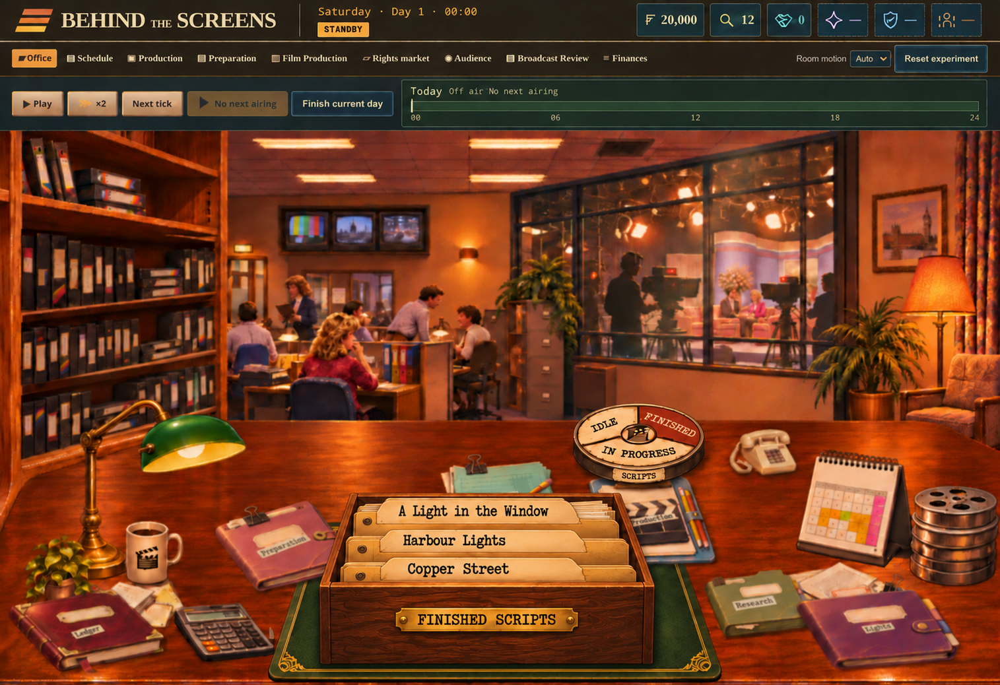
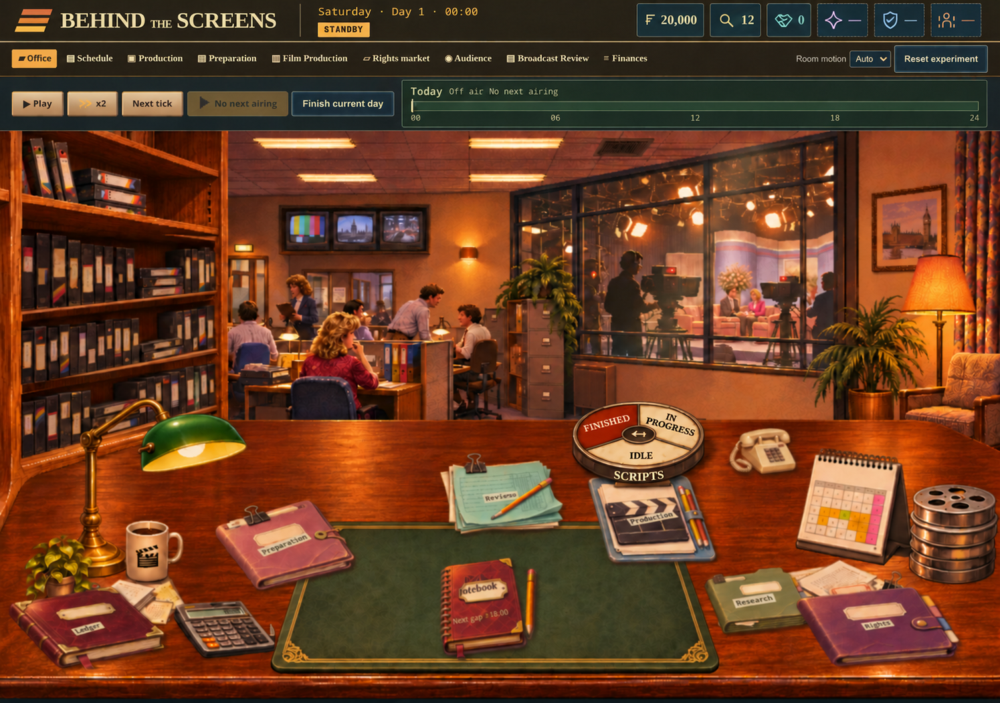
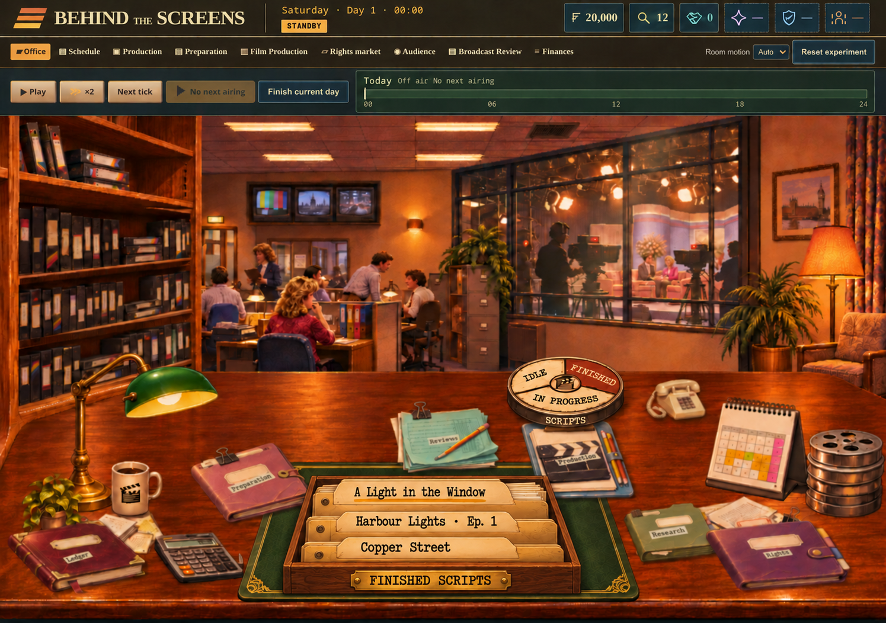
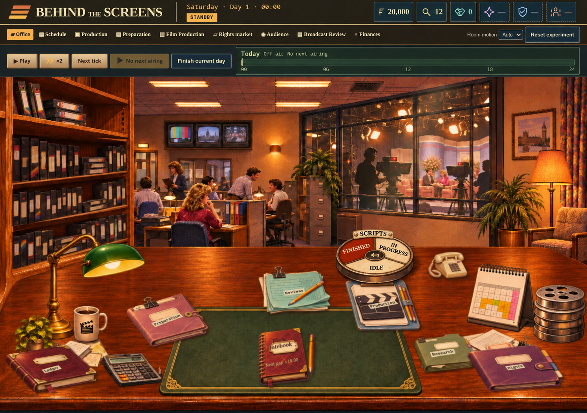
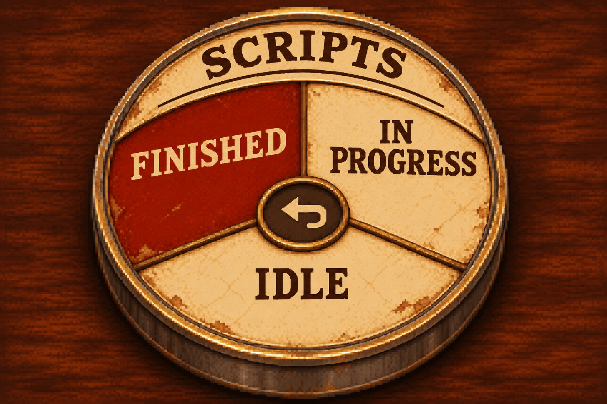
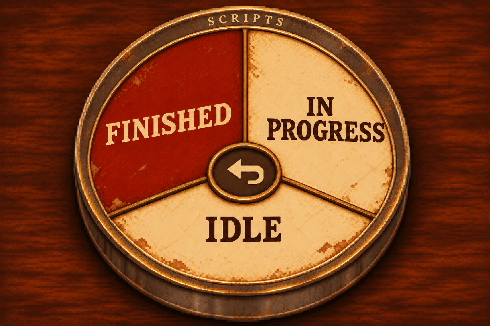
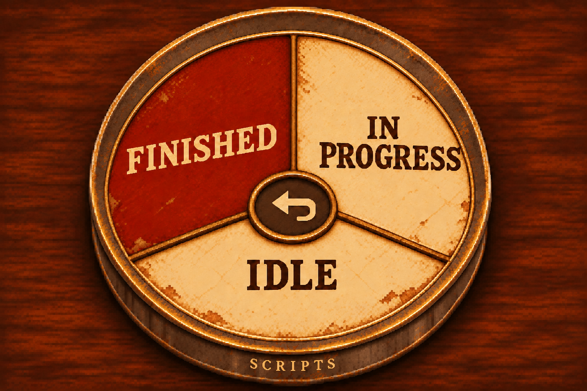
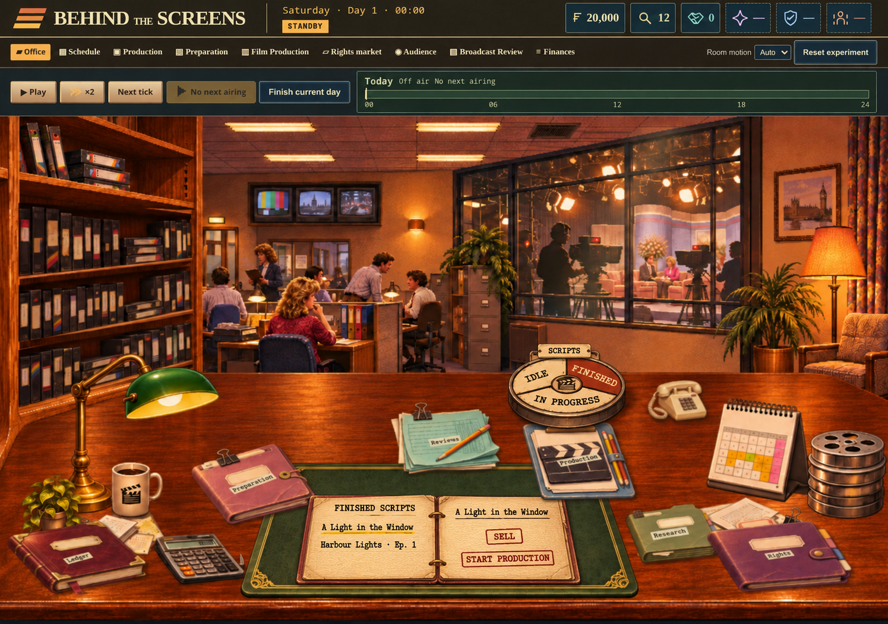

Inside the film can
The enamel lid shows one level at a time. The can remains beside the Production clipboard.
View the three original treatments
Show folders in a taller script box

The tin has a paper sticker. The taller box holds shows upright. Harbour Lights opens its episode scripts one level further in.
Scripts with the side label, in the room

The Scripts submenu uses the original tin beside the Production clipboard.

Choosing Finished brings out the folder tray. Scripts stays on the canister side.
1. Production
Open the clipboard to choose a stage.
2A. Ideas
Draft new leads to Fiction and Nonfiction on another face of the same can. Existing opens a paper index of drafts by name.
2B. Scripts

The rim tab tells you which branch you are in. The hub goes back one level. All three statuses open a list.
Scripts with an enamel heading

A variant with the branch printed inside the lid. Back stays in the center.
Scripts on the outer rim

Scripts sits on the metal ring. The full enamel face holds the choices and Back.
Scripts on the canister side

The branch name sits on the cylindrical side, facing the player. The lid carries the choices and Back.
3. Pick a script from the tray
Finished brings out a tray of manuscript folders. Pull a folder by its title tab to open the script.
4. Read the selected script

This earlier spread shows the action stamps that belong inside the selected script file. Start production moves to the production dossier for that script.